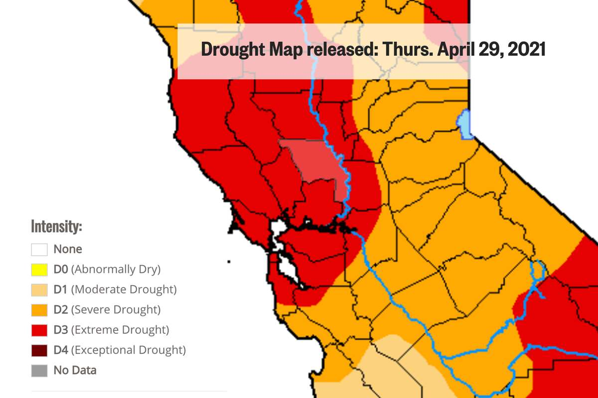
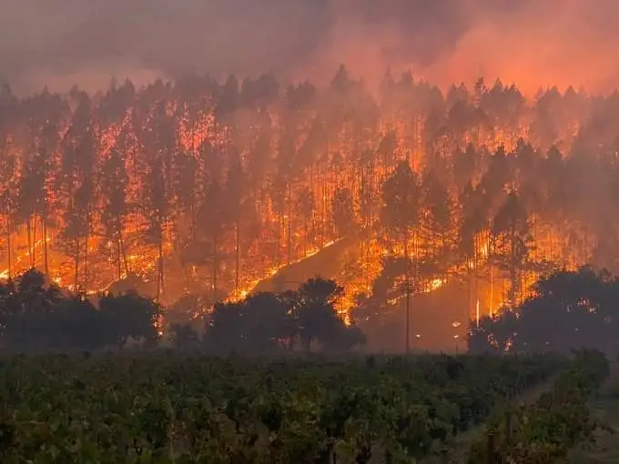

ESPM 50AC Final Project (fall 2022)
Climate change and its effects in the bay area today: The energy and water crisis
by Rian Puri
Last edited: 2nd December, Friday 2022.
My website analyzes climate change and its effect in the bay area. Climate change has been changing the world’s seasons, temperatures, sea levels, etc. with consequences effecting our lives and lasting many years. In this project I analyze the problems the bay area is facing due to climate change and why they are happening.
Most of the problems we are facing due to climate change are interrelated and form larger problems which impact our lives. Understanding these problems is key to solving them.
I will explore the energy and water crisis caused by climate change in depth, as well as the related issues that come along with it. I will also explore how private companies are trying to combat these problems in their own way.
Drought

To fully understand the water crisis in the bay area we must extend this question to California as a whole.
Droughts in California are a recurring feature which create public health and safety concerns, including catastrophic wildfire risks and drinking water shortage risks.
Severe droughts occurred in 1976‒77, 1987‒92, 2007‒09, and most recently in 2012‒16, which was recorded as the hottest drought in state history.
One third of the water in Southern California is supplied by the Colorado river. However,
the Colorado river water level at two main reservoirs Lake Powell and Lake Mead are at historic lows, and any further drop could cause their dams to stop generating hydroelectric power, a form of clean energy.
A higher water demand in southern California creates ripple effects in the northern side.
The northern part of California gets eighty five percent of its water from the Sierra Nevada snowmelt stored in the Hetch Hetchy reservoir situated on the Tuolumne River in Yosemite National Park.
With the rise of global warming, there are less snowcaps forming in the mountains each winter and are melting faster as summer approaches. This leads to less water in the reservoirs to use.
Furthermore, due to climate change, the bay area is seeing a shorter monsoon season and longer dry spells thus exacerbating the already dry weather experienced.
Wildfires

The weather conditions of California and climate change are affecting the forests of California as they become prone to wildfires.
As climate change brings higher temperatures and drought, dry conditions are created in the forests in and around the bay area. Shorter monsoon seasons and longer dry spells make dry forests which are particularly susceptible to forest fires.
Furthermore, the large forest coverage paired with the strong winds that the bay area faces make perfect conditions for wildfires to start and spread.
In recent years, California has seen uncontrollable wildfires covering larger land areas and for longer time periods, destroying wildlife and increasing carbon emissions.
In August of 2020, lightning strikes ignited more than 600 fires in Northern California. This resulted in the August Complex fire that burned more than a million acres of forest land, one of the worst fires the bay area has seen in recorded history.
Experts now consider wildfires as a yearlong threat faced by California. This year alone, the state has budgeted $3.7 billion towards wildfire response with $413 million for emergency spending.
Energy
Due to its large population, California has the second highest total energy demand in the country. To satisfy its energy needs, California imports more electricity than any other state. However, when California’s neighboring states also experience high demand for electricity it creates a ripple effect in the nations electrical system.
Furthermore, California’s progressive policymaking encourages the use of electricity over traditional carbon emitting energies such as gas, which creates a larger toll on the electrical system.
During early September of 2022, the bay area experienced one of their worst heat waves ever, testing California’s electrical grid and causing an emergency on the verge of electric blackouts.
With hotter summers than ever before, electricity consumption in the bay area has skyrocketed. Residents have been advised to install their own solar panels to reduce load on the grid.
Other companies are trying to solve this issue as well.
Most notably tech giant Tesla has created a solar roof for houses to generate electricity and has created a backup battery for houses, called the ‘Powerwall’ in the (inevitable) chance of a power outage, advertising energy independence.
Floods
Flooding has been one of the bay area’s persistent problems of the last few decades.
However, like many other problems we are facing today, it has been exacerbated due to climate change and crumbling infrastructure.
The rise of sea levels due to global warming, coupled with the winter storms of prolonged rain, make the bay area susceptible to flooding, especially in the low-lying areas and coastal regions of the bay.
Climate change also brings erratic, unpredictable and sustained periods of rain which causes strain on the old drainage system of the bay area.
Due to these factors, important areas such as San Francisco International Airport, Oakland Airport and major freeways are at high risk of flooding.
Bibliography
Adapted from
-
https://www.scientificamerican.com/article/why-california-wildfires-burned-far-less-this-year/
-
https://www.politico.com/news/2022/09/23/californias-lofty-climate-goals-clash-with-reality-00058466
-
https://abc7news.com/megaflood-bay-area-flooding-risk-wildfire-flood-climate-change-floods/12128859/
-
https://laist.com/news/climate-environment/four-things-to-know-about-colorado-river-water-in-california#ca
-
https://abc7news.com/megaflood-bay-area-flooding-risk-wildfire-flood-climate-change-floods/12128859/
-
https://abag.ca.gov/our-work/resilience/data-research/flood
-
https://drought.ca.gov/
-
https://www.ppic.org/publication/droughts-in-california/#:~:text=Significant%20recent%20droughts%20occurred%20in,is%20making%20droughts%20more%20intense.
-
https://education.nationalgeographic.org/resource/case-study-california-blackouts
-
https://lao.ca.gov/Publications/Report/4575#:~:text=A%20changing%20climate%20presents%20California,erosion%20from%20sea%E2%80%91level%20rise.
-
https://www.sfchronicle.com/projects/california-fire-map/august-complex-fire-2020
-
https://deadline.com/2020/10/californias-largest-blaze-august-complex-fire-over-1-million-acres-1234591511/